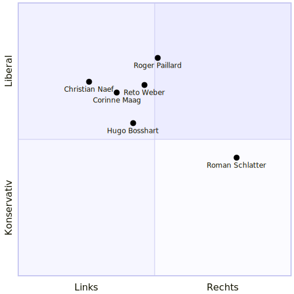
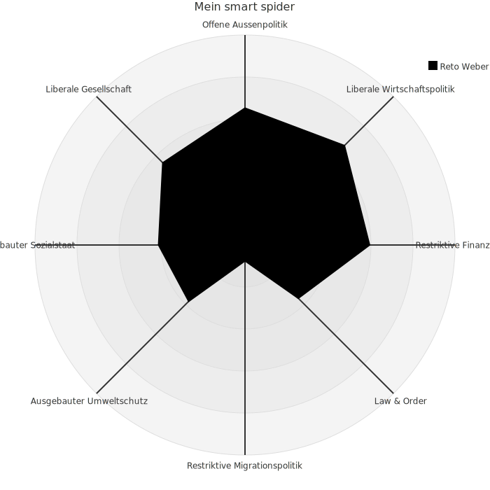

Einwohnerrat
Seit Anfangs 2025 bin ich gewähltes Mitglied des Einwohnerrats in Beringen. Ich vertrete die Interessen der Bevölkerung im Namen der EVP.
Zusätzlich bin ich Mitglied der Tiefbaukomission, der Schwimmbadkomission und im Parteivorstand unserer kantonalen Partei.
Smartvote
Mein politische Haltung ermittelt via smatvote:

Die Daten der anderen Teilnehmer. Die nicht aufgeführten Einwohnerräte und Gemeinderäte fand ich nicht online.

Volksentscheide
28. September 2025
E-ID Vortrag
 Am 4. September gab ich einen öffentlichen Vortrag über die E-ID anlässlich der nationalen Abstimmung. Ich entwickelte die E-ID mit und erzählte über die technische Funktionsweise und stand für Fragen zur Verfügung. (mehr Infos)
Am 4. September gab ich einen öffentlichen Vortrag über die E-ID anlässlich der nationalen Abstimmung. Ich entwickelte die E-ID mit und erzählte über die technische Funktionsweise und stand für Fragen zur Verfügung. (mehr Infos)
Das Volk nahm die Vorlage sehr knapp an Link. In Schaffhausen war die Zustimmung signifikant kleiner Link.
Referendum wegen Teilrevision der Nutzungsplanung
Das Referendum wurde ergriffen. Ich befürwortete die Vorlage des Gemeinderats und lehne das Referendum ab. Ich stellte mich zur Verfügung, auf Flyer abgedruckt zu werden. Diese Haltung stimmt mit meiner Stimme am 6. Mai 2025 überein.
Ich bin vom Abstimmungskampf etwas enttäuscht von beiden Seiten.
- Auf der "Pro"-Seite zu welcher ich gehöre, wurde mein Gesicht und mein Argument abgedruckt. Ich bin jedoch der am wenigsten einflussreiche Politiker in ganz Beringen. Ich hatte gerade mal 212 Stimmen nur Thomas Widmer hatte auch nur 237 Stimmen und alle anderen hatten über doppelt so viele Stimmen; doch keiner hat sich bereit dazu erklärt, sich öffentlich für die Vorlage auszusprechen. Vielleicht wegen allfäliger Befangenheit? Doch warum sind sie dann nicht in der Einwohnerratssitzung in den Ausstand getreten?
- Auf der "Contra"-Seite wird jetzt damit geworben, dass das Land zu günstig umgezont wird. Aber es stand ein Vorschlag der auf dem Tisch, der mehr Geld für die Gemeinde herausholen wollte, aber dieser wurde von den jetzigen Gegnern nicht gutgeheissen.
Ich erstellte eine Seite mit neutralen Fakten zur Abstimmung. Mehr fehlten diese Informationen in der Vergangenheit für kommunale Geschäfte. Ich versuche das auch in Zukunft zu erstellen.
Das Volk lehnte die Zonenplanänderung ab (Link), was ich schade finde. Es ist auch ein Realitätscheck für uns im Einwohnerrat. Fast alle Parteien waren dafür. Sehr viele Einwohnerräte waren dafür. Das Volk aber dagegen.
Abstimmungen und Wahlen im Einwohnerrat
Hier lege ich Rechenschaft ab über was ich abgestimmt oder gewählt habe im Einwohnerrat. Die Vorlagen können auf der Webseite der Gemeinde Beringen gefunden werden.
23. September 2025
Link zu den Beschlüssen ist noch nicht publiziert (24.9.25 9:00)
| Meine Stimme | Einwohnerrats- beschluss | Name der Vorlage |
|---|---|---|
| ✓ | ✓ | Baukredit Neubau Werkhof an der Werkstrasse |
| ✓ | ✓ | Gesamtkredit für Umsetzung Beleuchtungskonzept (öffentliche Beleuchtung) |
| ✗ | ✗ | Verschidenes: Antrag die Einwohnerratssitzung von 20:00 auf 19:30 zu verschieben |
Der Neubau des Werkhofs verursachte lange Diskussionen. Es wurde vorallem bemängelt, dass der Bau zu teuer sei und viele Fahrzeuge drausen stehen bleiben könnten. Meine Haltung war von Beginn, dass dies zu spät sei. Wir sind nicht in der Planungsphase. Es wurde gesagt es werde 5.3 Mio kosten (± 30%). Jetzt kostet es 4.9Mio (± 10%). Aus meiner Sicht hat der Gemeinderat alles genauso umgesetzt wie angekündigt und aufgetragen. Zusätzlich hat das Volk "Ja" zum Planungskredit gesagt und ich fände es bevormundend zu einen Projekt "Nein" zu sagen, dass genau den Spezifikationen entspricht. Die Vorlage unterliegt dem obligatorischen Referendum weil sie zu teuer ist.
1. Juli 2025
| Meine Stimme | Einwohnerrats- beschluss | Name der Vorlage |
|---|---|---|
| ✓ | ✓ | Jahresrechnung 2024 der Einwohnergemeinde Beringen |
| ✓ | ✓ | Landverkauf der Parzelle GB Nr. 1848 in Beringen. Die Parzelle GB Nr. 1848 entlang der Schaffhauserstrasse wird dem Migros-Genossenschafts-Bund fürtotal CHF 305'760.00 verkauft. Sollte auch noch ein Mehrzweckstreifen entlang der Schaffhauserstrasse eingeplant und ein Teil der Parzelle GB Nr. 1848 an den Kanton Schaffhausen abgetreten werden, ist die an den Migros-Genossenschafts-Bund zu veräussernde Parzelle entsprechend zu reduzieren. Der Kaufpreis beträgt auch in diesem Fall CHF 490.00 pro m2. Die anfallenden Kosten des Grundbuchamtes gehen in jedem Fall zu Lasten der Käuferin. |
Ich fand es schön, dass ein Vorschlag des Einwohnerrats innert einem halben Jahr zu einer Vorlage wurde. Die neue Verkehrsführung bei der Migros wurde nämlich in der Einwohnerratssitzung im Dezember eingebracht und jetzt in die Wege geleitet.
6. Mai 2025
| Meine Stimme | Einwohnerrats- beschluss | Name der Vorlage |
|---|---|---|
| ✓ | ✗ | Antrag von Michael Bizic zur Vorlage über Teilrevision der der Nutzungsplanung: Die Vorlage an den Gemeinderat zurückzuweisen, mit der Begründung, Punkt 5 neu zu verhandeln. Hierbei geht es um die Entschädigungen an die Gemeinde Beringen. Der neue Vorschlag oder Vorgabe wäre 40 Rappen pro Kubikmeter Kies, welcher die Grube verlässt, und 30 Rappen pro Kubikmeter Füllmaterial, welches wieder hineinkommt. |
| ✓ | ✓ | Vorlage über die Teilrevision der Nutzungsplanung bezüglich der Zonenplanänderung im Gebiet Hooloo/Hinderi Laufferstaag und die Änderung der Bau- und Nutzungsordnung. |
Der Antrag von Michael Bizic fand ich unterstützenswert und hätte ihn der Vorlage vorgezogen. Er wurde aber mit 5 zu 4 bei 1 Enthaltung abgelehnt. Ich war aber eher für die originale Vorlage als gar nichts.
14. Januar 2025
| Meine Stimme | Einwohnerrats- beschluss | Name der Vorlage |
|---|---|---|
| - | ✓ | Gewählt als Stimmenzähler. |
| ✓ | ✓ | In unterschiedlichen Wahlen wählte ich die vorgeschlagenen Kandidatinnen und Kandidaten. |
| ✓ | ✓ | Vorlage zur Anpassung des Schulleitungspensums als Folge der Vorgaben zur flächendeckenden Einführung von geleiteten Schulen im Kanton Schaffhausen |
| ✓ | ✓ | Abrechnung über die Neugestaltung der Kreuzung Trasadingerstrasse H13 – Haardaublick (Bömmliacker Ost) Beringen über brutto CHF 295'472.95 |
| ✓ | ✓ | Abrechnung für die Beschaffung eines neuen Gemeindefahrzeuges für den Gebäudeunterhaltüber brutto CHF 114‘393.80 |
In dieser ersten Sitzung war ich nervös. Auch wenn Stimmen zählen nicht schwierig ist, war es mit der Nervosität eine kleine Herausforderung. Bei der Abrechnung bezüglich "Beschaffung eines neuen Gemeindefahrzeugs" fragte ich nach, warum das alte so günstig verkauft wurde. Hugo Bosshart (Tiefbaureferent) beantwortete die Frage im Moment zufriedenstellend. Im Nachhinein hätte ich mehr nachhacken sollen, der Preis war wirklich zu tief.